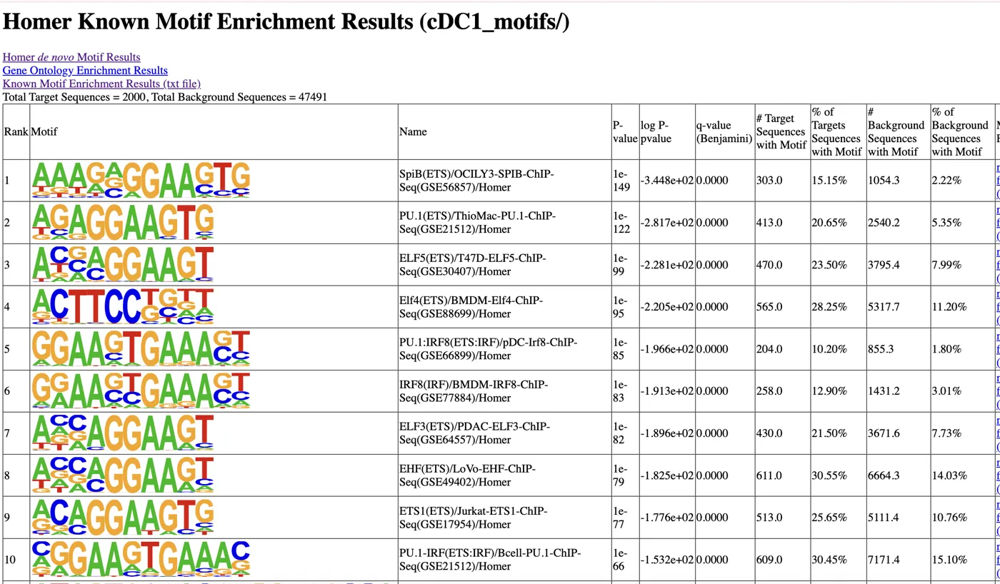
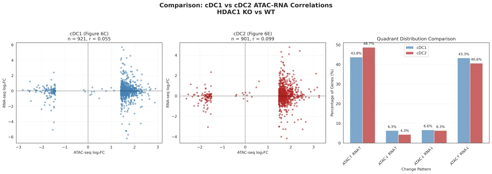

Course project · Nextflow, HOMER and Python
ATAC-seq: Chromatin Accessibility in Dendritic Cells
A Nextflow reproduction of the HDAC1 dendritic-cell study (De Sá Fernandes et al., 2024, Cell Reports), from raw SRA reads to differentially accessible regions and motifs.
The problem
Deleting HDAC1 in dendritic cells should change which chromatin is open. This pipeline rebuilds that analysis for two subsets, cDC1 and cDC2, from public data.
What I did
Reads to peaks
Public data from GEO GSE266584 is downloaded, trimmed with Trimmomatic, aligned to mm10 with Bowtie2 and called into peaks with HOMER.
Differential accessibility
A Python script compares WT and KO peak counts per cell type with a relaxed cutoff (p < 0.15 and |log2FC| > 0.5), because there are only two replicates per group.
Annotate
HOMER annotation and motif enrichment, deepTools tracks, and a companion RNA-seq workflow that uses DESeq2.
Code
result['log2FC'] = np.log2((result['KO_mean'] + 1) / (result['WT_mean'] + 1))
# ...
# Use p < 0.15 (relaxed for n=2) AND |log2FC| > 0.5 (1.4x fold change)
sig = result[(result['pvalue'] < 0.15) & (abs(result['log2FC']) > 0.5)]
Python: the differential test thresholds
process DIFF_ANALYSIS {
container 'ghcr.io/bf528/pandas:latest'
publishDir "${params.outdir}/differential", mode: 'copy'
label 'process_low'
input:
tuple val(cell_type), val(samples), val(conditions), val(replicates), path(counts)
output:
tuple val(cell_type), path("${cell_type}_diff_peaks.bed"), emit: diff_peaks
path("${cell_type}_diff_results.txt"), emit: results
script:
"""
diff_analysis.py \
--counts ${counts} \
--samples ${samples.join(',')} \
--conditions ${conditions.join(',')} \
--output ${cell_type}_diff_results.txt \
--bed ${cell_type}_diff_peaks.bed
"""
Nextflow: differential analysis per cell type
Results



What I learned and what I would do differently
- With two replicates per group, the differential step is exploratory. The script uses a t-like statistic with an approximate p-value, which is why the cutoff is relaxed. A count-based model such as DESeq2 or edgeR with FDR control is the right tool, and swapping it in is the first thing I would do.
- Reproducing the figures taught me how many silent choices sit between a methods paragraph and a plot.
Tools
Links
The pipeline rebuilds the study's Figure 6 panels from raw reads, with thresholds relaxed to suit two replicates per group.